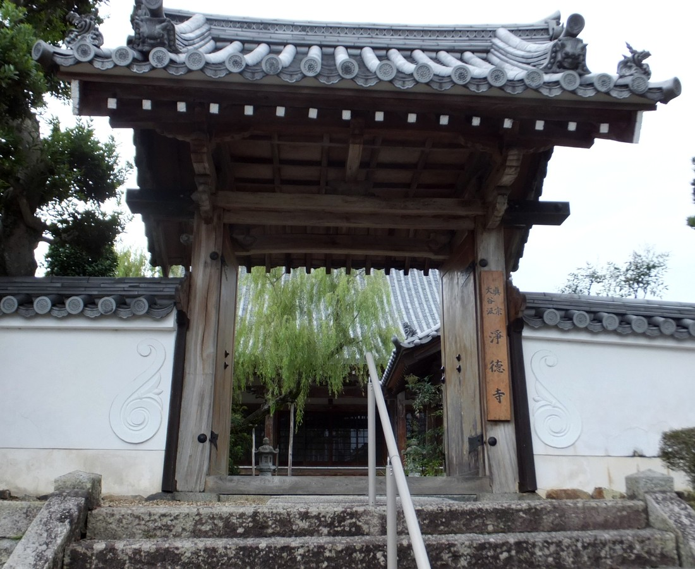
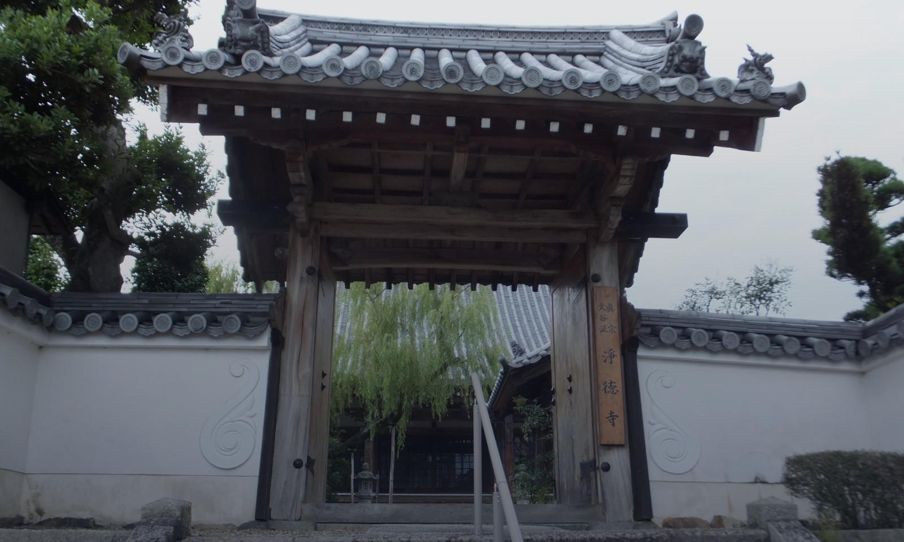

永代供養のことがよくわからない
専門用語が多く、何を基準に選べばよいのか迷ってしまう方へ。
川西市で永代供養墓をお探しの方へ
檀家制度不要・宗旨宗派不問。
ご家族に負担を残しにくい、落ち着いた環境での永代供養をご案内します。
見学・ご相談・お問い合わせは、時間帯を問わずお気軽にお電話ください。 24時間対応可能です。
はじめての方にもわかりやすく
専門用語が多く、何を基準に選べばよいのか迷ってしまう方へ。
将来の管理や継承の不安を減らし、安心して供養を考えたい方へ。
浄徳寺の永代供養墓は、宗旨宗派を問わずご相談いただけます。
見学前のご相談やご質問だけでも、気軽にお電話ください。
浄徳寺の永代供養墓
初めて永代供養を検討される方にも、安心してご覧いただけるように整理しました。
お寺が責任をもってご供養いたします。永く安心してお任せいただける永代供養墓です。
どなたでもご相談いただけます。檀家にならなければならないのでは、と不安な方にも安心です。
すべての宗教・宗派の方に対応しています。まずは状況をお聞かせください。
合葬されることはありません。個別にお納めする形を希望される方に向いています。
ご家族でのご利用も考えやすいよう、仏様の人数に制限はありません。
お問い合わせはお電話で承っています。時間帯を問わず、24時間対応可能です。
初心者の方向け
永代供養とは、お寺が永代にわたりご供養を続けるお墓のことです。 「子どもに負担をかけたくない」「お墓の管理や継承が心配」とお考えの方に選ばれています。
浄徳寺では、合葬ではない個別型永代供養墓をご案内しています。 永代供養が初めての方にもわかりやすくご説明しますので、まずはお気軽にお電話ください。
わかりやすく料金をご案内
掲載金額には、永代使用料・永代管理料・納骨法要料が含まれています。
25万円
29万円
33万円
37万円
ご相談からご納骨まで
見学のご希望やご事情、ご不明点をお伺いします。時間帯は気にせず、お気軽にご連絡ください。
現地の雰囲気や永代供養墓の内容をご確認いただきます。まずは話だけ聞きたい場合も歓迎です。
内容にご納得いただいたうえで、お申込みへ進みます。
ご相談のうえ日程を決め、ご納骨とご供養を行います。
お寺紹介
浄徳寺は真宗大谷派の寺院です。能勢電鉄妙見線の「多田駅」「鼓滝駅」「鶯の森駅」が最寄りであり、歴史ある地域に根ざしたお寺です。
落ち着いた環境のなかで、安心して永代供養をご検討いただけるよう、丁寧にご案内いたします。

境内の雰囲気

「きちんとしていそう」「安心できそう」と感じていただける、 落ち着いたご案内ページを目指しています。
気になる点を先に確認
はい。浄徳寺の永代供養墓は、宗旨宗派不問です。
いいえ。檀家制度不要ですので、どなたでもご相談いただけます。
いいえ。浄徳寺の永代供養墓は、合葬ではない個別型です。
もちろんです。見学前のご相談だけでも歓迎しています。時間帯を問わず、お気軽にお電話ください。
アクセス